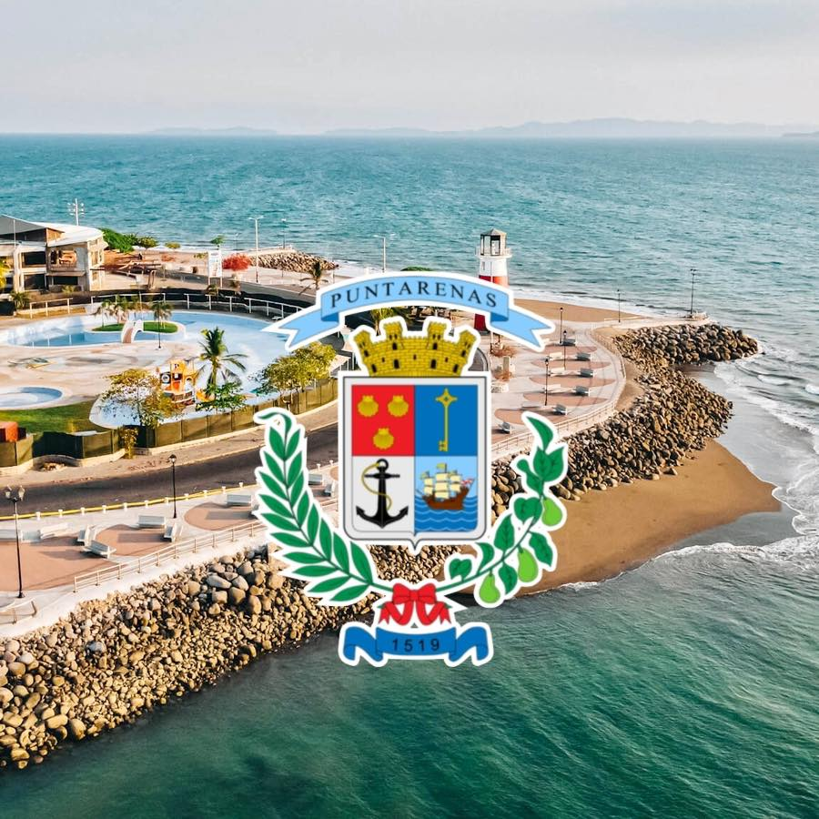

Experiencia profesional
Escuela de Geografía, Universidad de Geografía
2006-2008 Asistente de investigación y cartografía digital del Proyecto Geomorfología del Caribe.
2008- 2012 Asistente de investigación y cartografía digital del Proyecto Geomorfología del Pacífico Sur.
Consultoría para CONSULSANTOS S.R.L
Enero-Marzo 2010 Georeferenciación de cultivos de aguacate y asesoría en la entrada de datos (digitalización) para la confección de mapas de uso de la tierra con el programa Arc Gis 9.2
Instituto Nacional de Estadística y Censos (INEC)
Agosto-Diciembre 2010 Técnico B en Geografía en la Unidad de Cartografía Digital, apoyando en la elaboración de la cartografía digital para la realización del Censo 2011.
GeoMétrica, S.A.
Julio2011-Julio2012 Delineante y Dibujante Catastral, dichas labores realizadas en el Proyecto de Regularización del Catastro y Registro.
Eptisa, S.A.
Julio2012-Junio2013 Delineante y Dibujante Catastral, dichas labores realizadas en el Proyecto de Regularización del Catastro y Registro.
Municipalidad de San José
Agosto2013-Diciembre2013 Servicios profesionales cartel 2013CD000819-99999 “Contratación de ocho técnicos para depuración de base de datos por un periodo de cinco meses”. Enero2014-Junio2014 Servicios profesionales cartel 2013CD-001695-999999 “Contratación de siete técnicos para depuración de base de datos por un periodo de cinco meses”.
Telespazio Argentina S.A
Octubre2013-Agosto2014 Delineante y Dibujante Catastral, dichas labores realizadas en el Proyecto de Regularización del Catastro y Registro.
Municipalidad de Puntarenas
Enero2015-Enero2016 Servicios Profesionales cartel CONTRATACIÓN DIRECTA 2014CD-000652-01 “Contratación de Servicios Profesionales en Geografía para realizar censos de Información Territorial y Sistemas de Información Geográfica”
Enero2016-Actualidad Profesional 1 en Propiedad para Profesional en Sistemas de Información Geográfica en el departamento de Catastro y Valoración.
Catálogo Profesional
Para consultas sobre proyectos y demás labores profesionales realizadas en la Municipalidad de Puntarenas, sírvase consultar el siguiente enlace Sitio Web de la Municipalidad de Puntarenas
